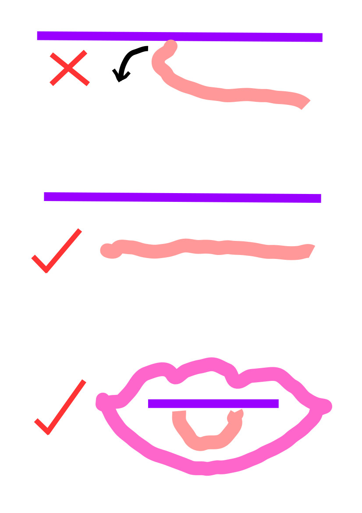

		<div class="content">
		
		  <div class=centeralign>
			<h1>How to Pronounce R</h1>			
            <p>To pronounce your R properly, open your mouth as wide as you can, say aaaaaaa, and as you do so, form your lips into a small circle. This final position is the position your tongue should be in when pronouncing R. Do not touch the top of your mouth, or your teeth with the tip (end) of your tongue. The purple line in the diagram below is the top of the mouth.</p>
            <p></p>
          </div><!--centeralign-->
          
        </div><!--content-->
    